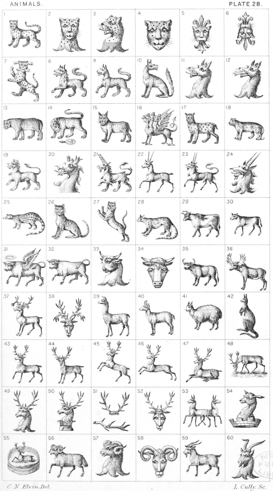

Plate 28.

Plate 28.
- Leopard statant guardant
- Leopard Head erased affrontee
- Leopard Head ppr. erased gu.
- Leopard Face
- Leopard Face jessant-de-lis. (sometimes
blazoned a Leopard's head
swallowing a fleur-de-lis)
- Leopard Face jessant-de-lis reversed
- Panther rampant incensed
- Heraldic Wolf passant, (sometimes
horned)
- Wolf passant
- Wolf sejant reguardant
- Wolf head erased
- Wolf head erased emitting flames
- Tiger
- Wolf and Mirror
- Lynx
- Hydra
- Lizard (there is another kind of
lizard see p. 39. f. 24)
- Ounce
- Heraldic Tiger passant
- Heraldic Tiger's head couped
- Ibex passant
- Antelope passant
- Heraldic Antelope passant
- Heraldic Antelope's head erased
- Genet
- Cat a mountain sejant
- Cat a mountain saliant
- Civet Cat
- Cow
- Calf passant
- Bull-winged ; or a flying bull
wings indorsed, over the head a
circle of glory
- Bull passant
- Bull's head erased
- Bull's head cabossed
- Buffalo
- Elk
- Reindeer
- Reindeer's head cabossed
- Lama
- Chamois
- Alpaca
- Kangaroo
- Stag Tripping
- Stag at Gaze
- Stag springing
- Stag courant
- Stag lodged
- Stag browsing, or feeding
- Stag's head erased
- Stag's head couped and gorged with
a ducal coronet
- Attires of a stag affixed to the scalp ;
and Attire
- Stag's head cabossed
- Two hinds counter-tripping
- Out of a mural crown a hind's head
- A Hart cumbant, or lodged reguardant upon a hill in a park paled
- Ram passant
- Ram's head erased
- Ram's head cabossed
- Goat passant
- Goat's head erased